最終的に、どんぐりは近所の公園のマテバシイを持って帰ることにした。
もう、学校や部活、文化祭とは何の関係もなくなってしまったがあしからず。
最終的に、どんぐりは近所の公園のマテバシイを持って帰ることにした。
もう、学校や部活、文化祭とは何の関係もなくなってしまったがあしからず。

少し採りすぎたかもしれない。
つい嬉しくなってしまったのだ。

乾燥機を使おう。
雨で濡れた靴はいつもこの乾燥機でパリパリに乾かしているからきっとどんぐりだって。
天日で干す場合、この時期、木枯らしのビル街ではカラスなどから守るためざるなどで蓋をしよう。

乾燥させたどんぐりを袋の中で動かないくらい詰め込んで金槌で粉砕する。

きれいに割れた。
また、乾燥機にかける時間が長いものほど割りやすく、からと種が分離しやすくなるため余裕がある場合は内部も完全に乾燥させてから作業にのぞんだ方が良い。

途中で家族が手伝ってくれた。
やはり大人数でやると効率が一気に上がる。
縄文時代を追体験しているようだ。

全て種のみにした。
爪が痛い。

水気をよく切ってあとは乾燥させる
風通しのよい場所に置いておこう。
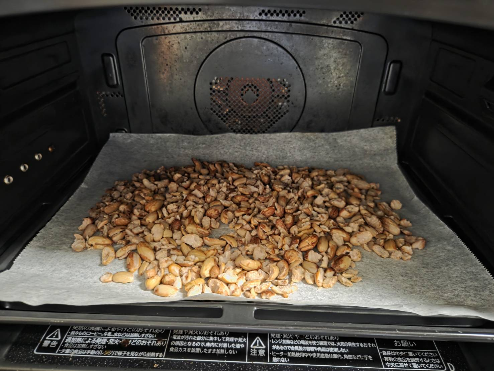
今日も今日とて雨である。
朝どんぐりの様子を確認したが完璧に乾燥したとは言えない。
これから粉にするというのに。
ということでオーブンに入れた。
からは昨日全て剥いたため爆発の心配もない。
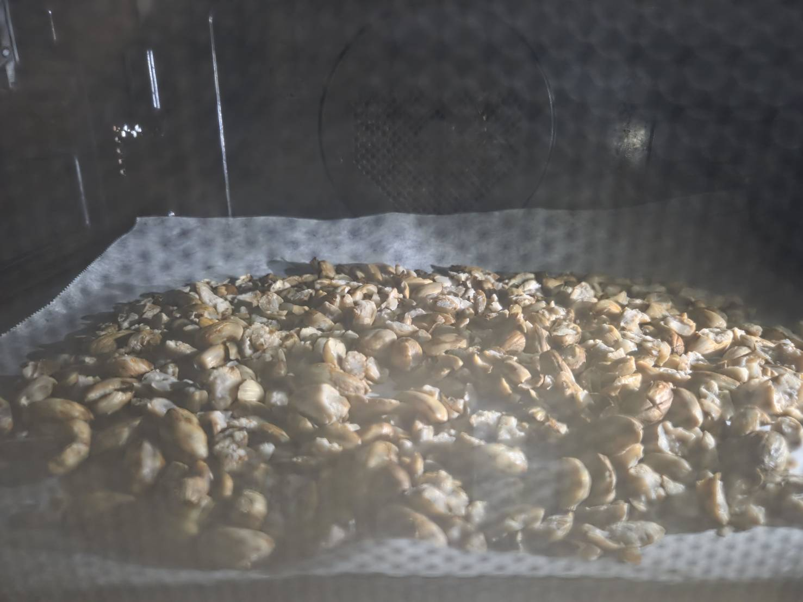
☆彡ワクワク☆彡
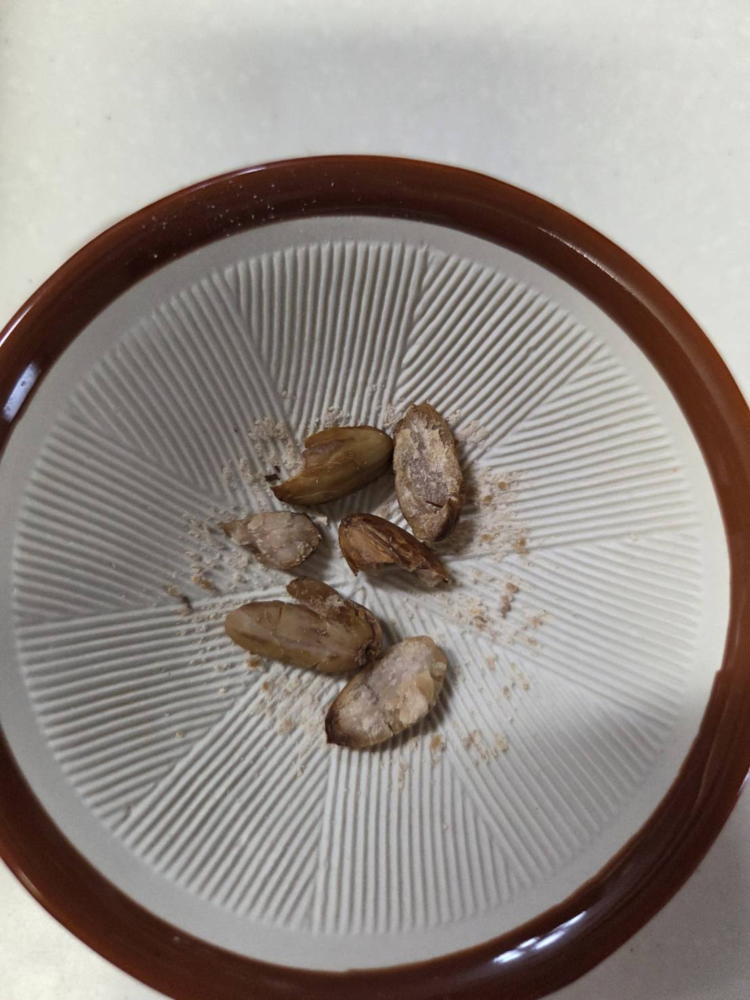
落とした時の音が軽くなったら次は粉にする。
擂鉢は親戚の家から借りてきた。ありがたい
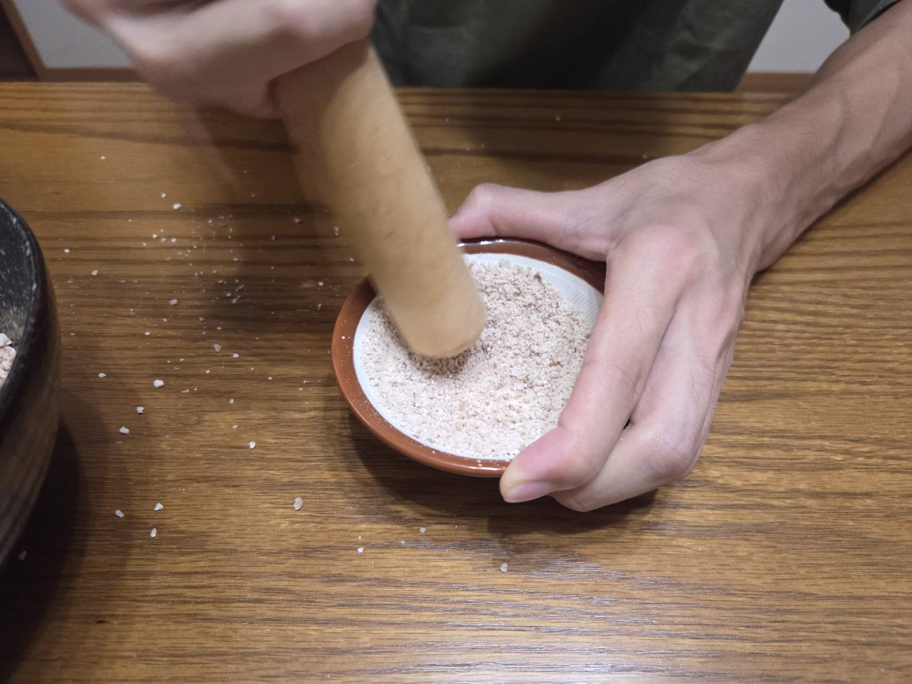
？？？？？
なんだか小さくないか？
これ…ゴマすり用じゃん…。
まあ、粉にできないこともないけど流石に小さい。飛び散ってるし。
でも家にあるのはこれだけ。
弱音を吐いてはいられない。
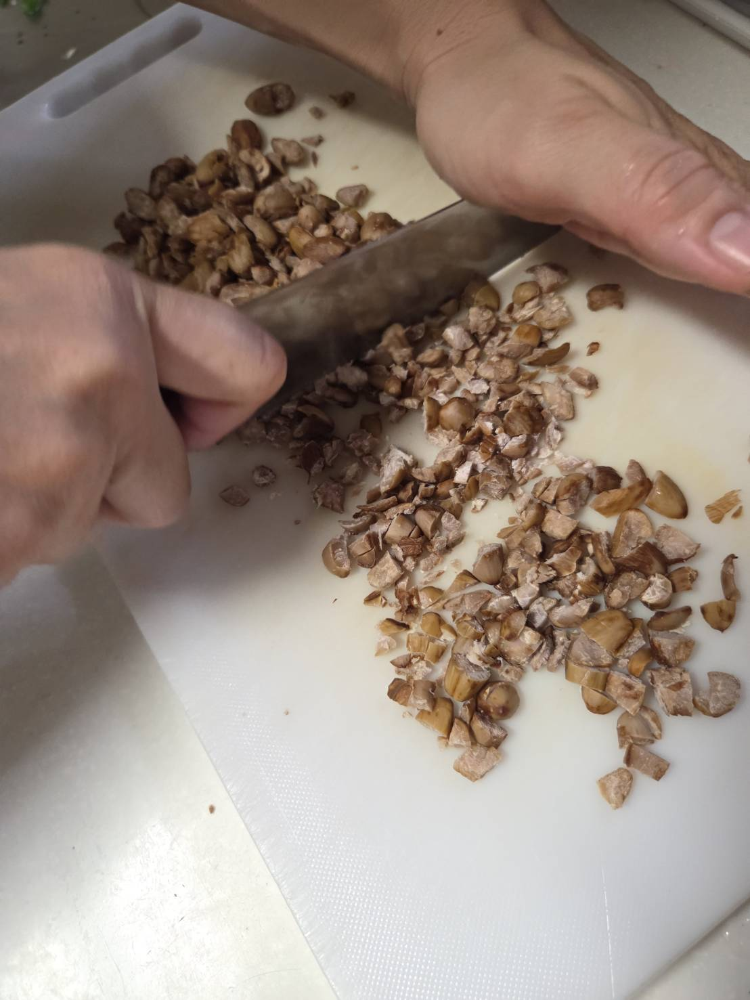
ハアハアハア……
ザクッザクッザクッザクッ
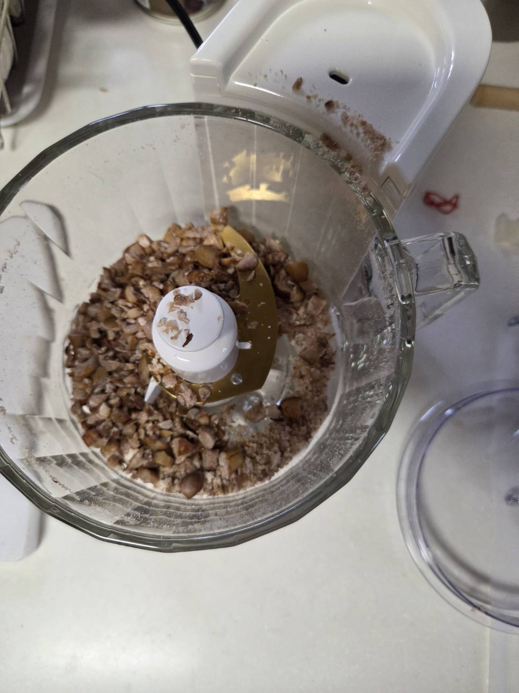
ハアハアハア……
パラパラパラパラ
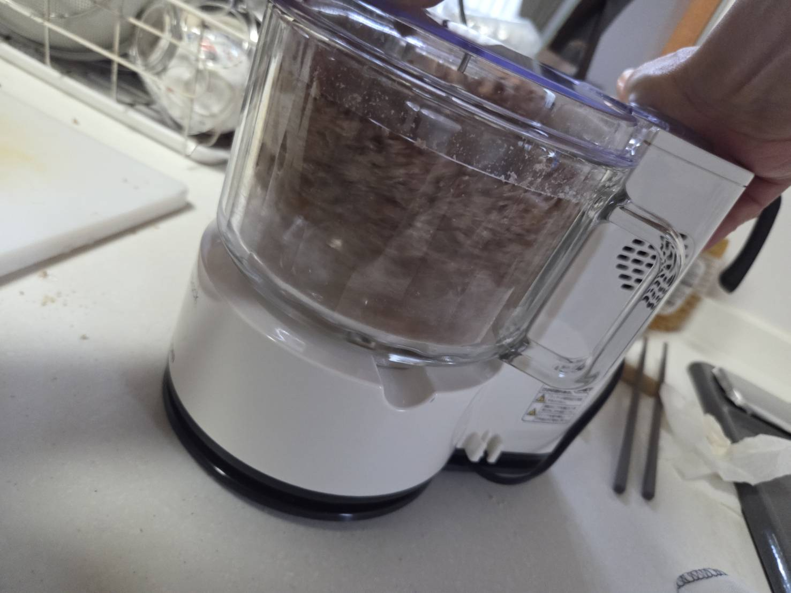
ハアハアハア……
ウィィィィィィィィィィィィィィィィイイイイイイイ
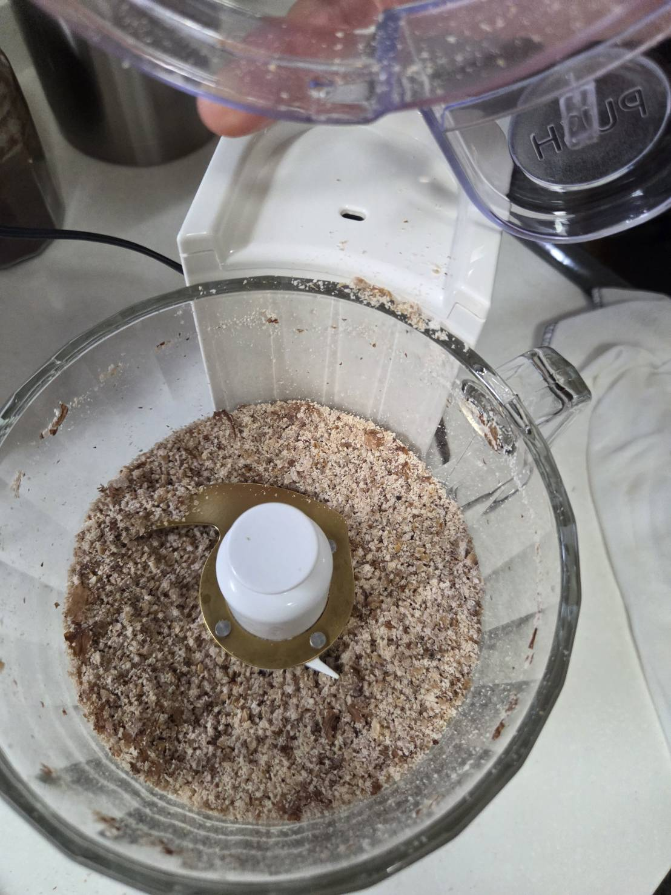
現代に生きることへの感謝を嚙み締めて。
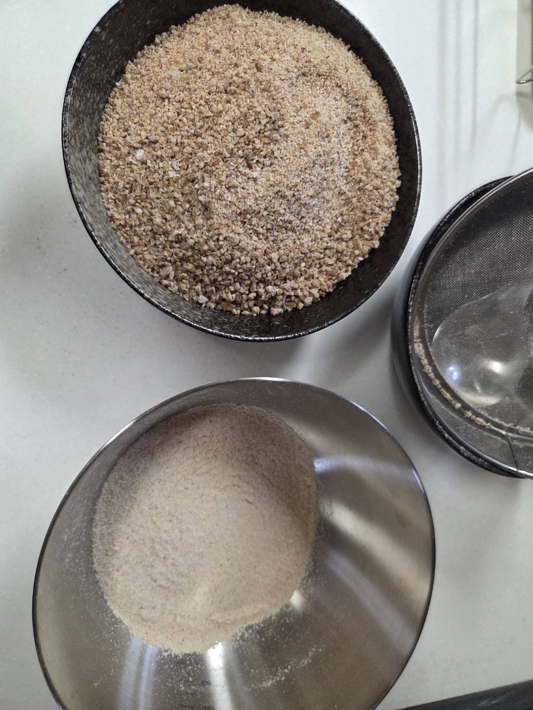
以上の工程から、粉を右のボウルに。左は要粉砕として取り分けた。
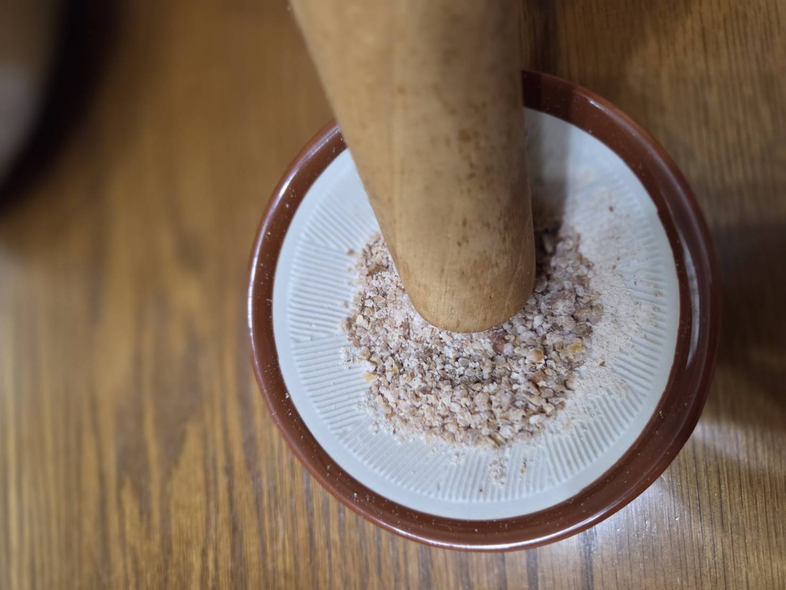
お、砕けやすくなったかもしれない。
それでは。
うおぉぉ（ｒｙ
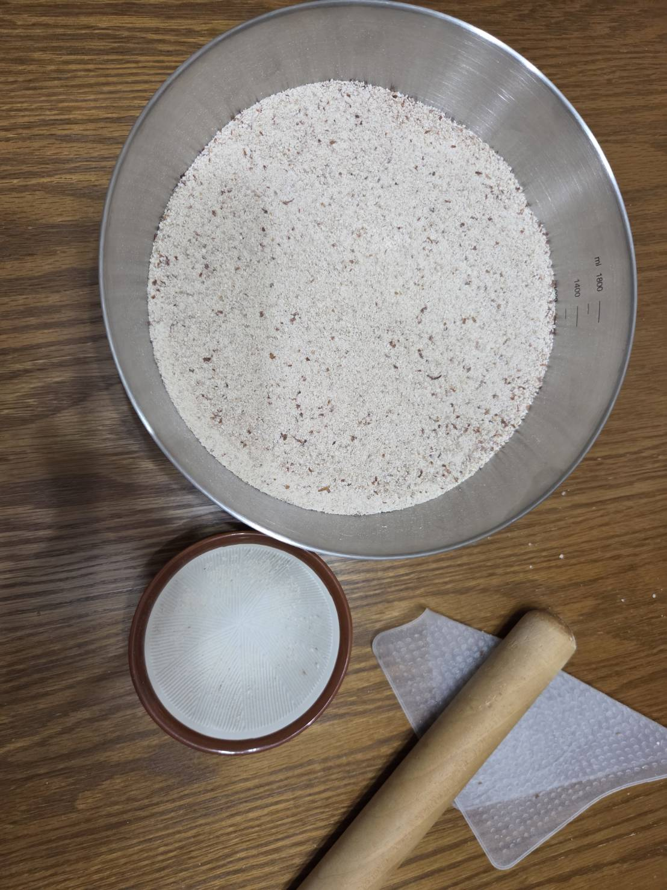
腕のよくわからないところが痛い。
中で大きな芋虫がうごめいているようだ…
疲労困憊で今にも夢の中へ飛び込めそうだがぐっと我慢しよう。